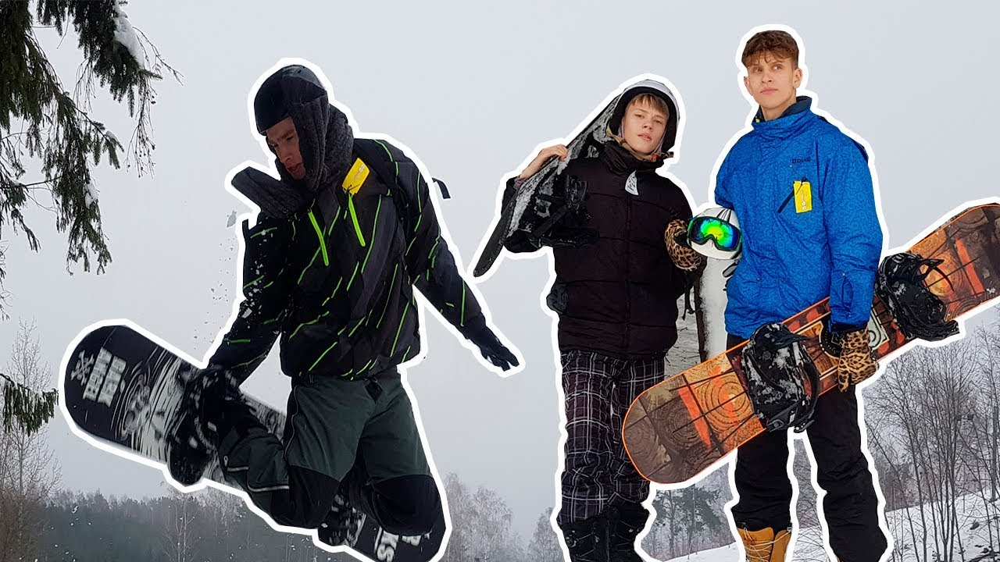

slidinėjimas | Mindaugo blogas
2020.10.30 03:16

Skip to content
Mindaugo blogas
Just about anything
Menu Home About Biking in Lithuania About Lithuania About Lithuanian Language Naudingos nuorodos kasdienai Cars BMW E45 330d Touring 150kw Subaru Outback 2017 gen 5 Installation Guides Anglonas Installation and Configuration Guide Kodėl karalius? My Hardware My Software Utilities Surinkimo ir priežiūros instrukcijos Home Posts tagged slidinėjimasslidinėjimas
Lyguminių slidžių video žiemai/vasarai
June 6, 2014 June 6, 2014 Mindaugas Laisvalaikis/Hobbies laisvalaikis , slidinėjimas , vasara , žiemaLabai paprastas, bet tuo pačiu daug parodantis apie techniką ir slidinėjimo būdus žiemą vasarą su lyguminėmis slidėmis. Vilniuje jau taip pat atsiranda vienas kitas “vasarinis” slidinėtojas.
Leave a commentSlidinėjimo kainos Čekijoje 2013
March 2, 2013 March 2, 2013 Mindaugas Laisvalaikis/Hobbies Kaina , slidinėjimasSlidinėjome Špindlerův Mlýn, Czech Republic
Turistinė svetainė apie tą regioną http://www.spindleruv-mlyn.com/en/
2850CZK 5 dienų skipass su 5% nuolaida yra 397,12Lt .
1330CZK Carving komplektas 5 dienoms yra 185,32Lt .
2400CZK 6 dienų nakvynė pensione keturviečiame kambaryje su bendra vonia ir tualetu yra 334,42 .
30CZK arbata yra 4,18Lt , 40CZK degtinė yra 5,57Lt.
Vanduo iš buteliuko 29CZK yra 4,04Lt.
Vakarienė1 433CZK+67 tips yra 69,67Lt.
Vakarienė2 330CZK+25 tips yra 49,47Lt.
Vakarienė3 225CZK+46 tips yra 37,76Lt.
Vakarienė4 199 hamburgeris, 49 alus, 25 tips yra 38,04Lt .
Pusryčiai1 Tortilija 95CZK yra 13,24Lt.
Pusryčiai2 Kebabas 89CZK ir kava 59CZK yra 20,62Lt .
Kava 40-45CZK yra 5,57Lt-6Lt.
Latte 66CZK yra 9,20Lt.
Hotdogas 60CZK yra 8,36Lt.
Du jeger shot’ai 80CZK yra 11,15Lt.
Instruktorius 1h 711CZK yra 99,07Lt.
Kuras 230Lt
3 CommentsBriko apranga lyguminiam slidinėjimui
January 21, 2013 January 21, 2013 Mindaugas Laisvalaikis/Hobbies slidinėjimas , XC skiing , žiema Briko Mito JacketNusprendžiau įsigyti tinkamą aprangą XC slidinėjimui. Audimas nieko nesiūlo, tad Vilniuje radau SkiGo firmos ir Briko .
Daugiau informacijos ir angliškos radau apie Briko, tad šį komplektą ir įsigijau.
Apibendrinsiu skirtumus Briko XC linijoje, kuriuos aš radau ir, kurie lėmė apsisprendimą.
Kriterijai: aprangos ieškojau kad galėčiau slidinėti ir prie –20; patogu; netrumpos rankovės, atšvaitai, nusegamos petnešos.
Galiausiai pasirinkimas tik buvo pirkti pigesnę Evo seriją ar brangesnę Mito.
Mito serija
Brangiausia serija kasdieniam naudojimui. Šilčiausi ir daugiausia technologojų turi. Aukščiau Mito yra tik lenktynėms skirti kostiumai.
Evo serija
Šiek tiek pigesnė. Šiek tiek mažiau technologijų.
XC Light serija
Pigiausia iš trijų. Net nežiūrėjau, nes pagal gamintoją temperatūra yra tik –3. Tikriausiai turint gerą pirmą sluoksnį tiktų ir šitas variantas.
Skirtumai pažymėti geltonai arba tiesiog tuščiomis lentelės celėmis.
Jacket palyginimas
Mito Evo XC Light top Performance linewith new technologies
for the most demanding
consumer in search
of performance and
esthetic appeal. High tech features,
comfort and appealing
lines for thermic
insulation and optimal
breathability during
activities.
Tecnologia, comfort technical line designed
for medium temperature
ranges, perfect for the
start of the season. Advanced All Users All Users Crosscountry Series Windout Crosscountry Series Windout Crosscountry Series Windout DY3 Performer Jacket DY3 Jacket DY2 Jacket -3 -10 -3 -10 +5 -3 Full lenght Briko self locking zip
with chin-guard Full lenght Briko self locking zip
with chin-guard Full lenght briko self locking zip
with chin-guard 2 Front hand zip lasered pockets 2 Front hand zip lasered pockets 2 Front hand zip pockets Chest mp3 player zip lasered
pocket Chest mp3 player zip lasered
pocket Ergonomic shaped construction Ergonomic shaped construction Ergonomic shaped construction Welded lasered panels Ventilation underarms with lasered
holes 3D airmesh panel at back for
perspiration T2 inner cuffs T2 cuffs T2 cuffs Warm T2 back panel Back T2 warm panels Back T2 warm panels Silver reflective logos Silver reflective logos Silver reflective logos DY stretch panels to support
free movements
Technologijos
Dynamo 3 Warm Dynamo 3 Warm Dynamo 3 Warm Dynamo stretch Dynamo stretch Dynamo stretch Thermofit HP Thermofit HP Thermofit HP 3D air mesh Windout Windout WindoutPants palyginimas
Crosscountry Series Windout Crosscountry Series Windout Crosscountry series- windout DYstretch pants DY2 Performer Bib DY2 Bib Pants Full lenght self locking zip Briko at
sides with double cursor Knee to bottom Briko self blocking
zip Knee to bottom Briko self blocking
zip with gusset New detachable lasered elastic
adjustable braces system New detachable lasered elastic
adjustable braces system Ergonomic shaped construction Ergonomic shaped construction Ergonomic shaped construction Waist regulation with lasered flaps Waist regulation with flaps Elastic waist regulation DY Stretch panels to support free
movements Dy stretch panels to support free
movements DY Stretch patch front lasered zip
pockets Dy stretch patch front zip pockets Back 3D Air Mesh inserts for
perspiration Back T2 warm panels Back T2 warm panels Back T2 warm panels Welded lasered panels Silver reflective logos Silver reflective logos Silver reflective logos Rip stop WR bottom leg panels
Technologijos
Dynamo 2 Dynamo 2 Dynamo stretch Dynamo stretch Dynamo stretch Thermofit HP Thermofit HP Thermofit HP 3D air mesh Windout Windout Windout Water resistantMito ir Evo pagrindiniai skirtumai yra vėdinimas. Tai galioje tiek striukei, tiek kelnėms.
Mito kelnės turi užtrauktuką per visą ilgį, o Evo tik nuo kelių. XC Light kelnės yra be petnešų. XC Light naudojamas paprastesnis, lengvesnis audinys.
Temperatūras radau praeitų metų kataloge, o likusius duomenis šių metų 2013 kataloge, taigi temperatūros nėra patikimas rodmuo.
Šaltinis
2012/2013 Briko katalogas Parduotuvė Vilniuje su gerom Briko kainom 0.000000 0.000000 2 CommentsKaip išsirinkti lygumines slides Vilniuje
January 27, 2012 February 12, 2012 Mindaugas Laisvalaikis/Hobbies slidinėjimas , slidėsPraeitais metasi užsikabinau ant Snaigės žygių. Ačiū geram draugui Martynui D. Kadangi tai buvo pirmi kartai po slidinėjimo vaikystėje (pertrauka ~20 metų), tad slides iš pradžių nuomovau. Taip su ta nuoma prisižaidžiau iki atėjo pavasaris. Nuomai išleisti pinigai beveik prilygo naujam komplektui.
Šį sezoną griežtai nusprendžiau nusipirkti ir nenuomoti. Kadangi esu prie “geek’ų”, mėgstu tikslumą ir kokybiškus daiktus, tad pradėjau pats domėtis, kokios būna slidės, kaip jas tinkamai parinkti pagal svorį/ūgį, kietumą, savo paskirtį. Prie to prisideda ir tai, kad sporto parduotuvėse praktiškai nėra gerų konsultantų, kurie išmanytų man svarbius niuansus. Toks jau tų savininkų požiūris, konsultantų dažniausiai negali kaltinti.
Pirmiausia nusprendžiau, kad pirksiu naują įrangą, bandysiu rasti kiek galima geresnį kokybės ir kainos santykį. Žodžiu, kad likčiau patenkintas.
Naujas slides Vilniuje parduoda Winner Sport , Instinktas , Dviratis Plius . Yra ir kitų tikriausiai, bet ten nesilankiau šį kartą.
Slidės
Svarbiausia slidėse yra jų ilgis ir kietumas. Lietuvoje populiariausias metodas yra kaišioti popieriuką ant nelygių grindų. Padedamos slidės ant grindų, žmogus atsistoja ir pardavėjas kiša popierėlį po slidžių centru, pabrauko šiek tiek link slidžių galo ir priekio. Jeigu popieriaus lapas vaikšto – vadinasi slidės tinkamos klientui. Dar pažiūri į katalogą pasitikrinimui ir viskas OK. Na ne visai..
Pirma pažiūrėkit šitą filmuką, kaip turėtų būti tikrinamos slidės žmogui. Gamintojas yra nesvarbu – principai tie patys.
Teisingas slidžių parinkimasVisi toliau paminėti atstumai yra apytiksliai, bet labai daug neturėtų skirtis. Nes tada slidės yra arba per kietos, arba per minkštos.
Nulinė zona, tai taškas ant slidės, kuriame laikant slidę su vienu pirštu ji išlaiko savo balansą. Nesvyra nei į vieną, nei į kitą pusę.
Prieš tikirinimą atsistojama taip, kad bato priekis yra ties nuline zona. Klasikiniam slidinėjimui yra trys slidės tikrinimo fazės:
Ramiai stovi ištiestomis kojomis. Slidės turi priglusti prie grindų, bet ne kietai. Kaip ir video, turi likti laisvas tarpas maždaug nuo bato kulno iki bato priekio. Bei nuo bato priekio (nulinės zonos) dar kokie +35 cm.Su viena koja atsistoji ant slidės. Kita praktiškai pakelta į orą. Tartum čiuožtum viena koja. Tarpas tarp slidės ir grindų sumažėja, bet dar išlieka. Maždaug per pusę. Jis gali būti nuo pėdos/kulno vidurio iki nulinės zonos, bei dar +20 cm.
Su ta pačia koja atsistoji ant pirštų galų. Imituojamas spaudimas, kai atsispiriama su slide. Taip stovint ant pirštų galų slidė turi kietai prisispausti prie grindų. Čiuožiant tai būtų atsispyrimas.
Vietoj grindų, matuojant, slidės gali būti suglaudžiamos. Nesvarbu, kaip jos pozicionuojamos, bet svarbu, kad būtų matuojama, parenkama tiksliai. O ne pakišau popieriuką ir viskas OK. Bent man taip atrodo.
Paveiksle tarpai simboliškai padidinti. Realiai tai dešimtosios ar šimtosios milimetro dalys. Ten tikrai neturi tilpti pirštas atsistojus ant slidžių.
Taigi tokį aparatą turi tik Instinktas. Kitur Vilniuje parduotuvėje neradau kas turėtų. Didelis pliusas jiems, kad turi, bei dar vienas pliusas, kad pardavėjas puikiai išmano kaip juo naudotis.
Sportiniame slidinėjimui (angl. skating) šie trys punktai šiek tiek kitokie. Vėl peržiūrėkit video antrą dalį.
Lazdos
Lazdos klasikiniame slidinėjime turi būti intervale nuo žemės iki pažasties arba peties.
Visa kita, ar aliuminis, ar anglies pluoštas, ar svoris – lemia dažniausiai tik piniginės storis. Mėgėjams manau nėra skirtumo. Aš pirkau iš aliuminio.
Pastaba dėl lazdų dirželio. Jis gali būti arba paprasta kilpa, kaip įprasta
Arba tokia tartum pirštinė. Man asmeniškai patogesnė buvo su pirštine.
Su kitokiomis neesu susidūręs kol kas. Bet kaip visada, čia pasirinkit, kas patogiau.
Apkaustai
Dabar buvo labai populiarus NNN tipo apkaustas, kuris sukasi varžtais į slidę. O kitoje pusėje jau yra fiksatorius batui. Parduotuvėje dažnai teikia paslaugą išgręžti ir prisukti apkaustą. Bet man kažkaip nekėlė pasitikėjimo vietiniai parduotuvių gręžimo meistrai. Nors tikriausiai nieko ten netikslaus nėra. Tačiau vis vien, o jei per giliai išgręš, o jei netiksliai?
Tačiau naujesnis yra NIS tipo apkaustas. Skirtumas tas, kad su NIS apkaustais, slidės jau parduodamos iš gamyklos ir pačiam nereikia nieko sukti. Anot apžvalgų tokios slidės yra lengvesnės keliais gramais, geresnės slidės valdymas, nes apkaustas su slide sujungtas visu plotu, o ne keliais varžtais. Su NIS galima šiek tiek pastumdyti apkaustą (batą) pirmyn atgal. Be to, uždėti viršutinę apkausto dalį nereikia jokių varžtų ar klijų. Ji gražiai gali būti uždedama – nuimama bet kada. Kai tuo tarpu su NNN reiktų išsukti varžtus. Manau, dažnas sukiojimas nėra į sveikatą.
Tačiau parduotuvėse Vilniuje su NIS vidutinės kainos intervale beveik be šansų gauti. O daugelis parduotuvių neturi arba net nėra girdėję. Kaip ten naujausios mados Lietuvoje?
NNN nėra bogai ar kažkaip nemadinga. Tiesiog tai šiek tiek ankstesnė technologija, kuri puikiai tarnauja iki šiol, tiek pasaulio čempionatuose, tie kas dien. NIS man buvo daugiau tiesiog noras, o ne realiais poreikiais pagrįstas sprendimas. Galit drąsiai pirkti abu tipus.
NNN apkaustas
NIS apkaustas (jau gamykloje uždėtos plokštelės)
Internetinės užsienio parduotuvės
Iš draugų pastabų ir panaršęs po jas, specializuotos slidžių e-parduotuvės, aiškiai skelbia, kad slides parinksim pagal svorį, išmatuosim aparatu. Be to, naujausi modeliai ne ką brangesni nei Vilniuje parduodamos slidės. Gaunasi, kad e-parduotuvės suteikia esmines paslaugas norint įsigyti TEISINGAS slides. O Vilniuje sporto prekėse to nėra.
Nors žvelgiant į Snaigės žygio dalyvių skaičių, laikau tai populiariu laisvalaikiu Vilniuje.
Epilogas
Viską komplektą įsigijau iš Instinktas, nes ten buvo reikalinga įranga, reikalingos pardavėjo žinios bei pataikiau ant teisingos akcijos kainos. Slidės yra gamintojo http://madshus.com/
P.S. Neturiu jokių asmeninių ryšių su Instinktas. Tiesiog ten gavau, tai ko ieškojau.
0.000000 0.000000 3 CommentsLaisvalaikio prekės
March 26, 2009 March 26, 2011 Mindaugas Laisvalaikis/Hobbies apranga , batai , gamta , slidinėjimas , žygiaiŠią žiemą užsikrėčiau slidinėjimu ir šiaip geros kokybės laisvalaikio inventoriumi.
Montaro
Labai patiko prekės North 66 gamintojo. Pirkau kasdienę kepurę – labai šilta ir lengva. Brangoka, bet verta buvo. Šią žiemą nesirgau :)) Vilniuje jų parduotuvė yra Centrinėje Universalinėje parduotuvėje CUP. Jų svetainė Montaro.lt . Ten pat žadu įsigyti apatinį sluoksnį po slidinėjimo kostiumu.
Skysčiai, milteliai, vaškas rubų, batų priežiūrai gali būti Granger’s gamintojo. Nežinau jų atstovybės Lietuvoje. Kai ką turi ta pati Montaro parduotuvė.
Montis Magia
Montis Magia parduotuvėje nusipirkau gerus batus. Ten daug turizmo ir laisvalaikio prekių.
Leave a commentPaieška bloge
Categories
Auto IT Kiekviena (ta pati) diena Laisvalaikis/Hobbies LINQ Mokslai Muzika ne tik ausims Nebaigti Oracle Programų sistemų inžinerija Subaru Outback 2017 UncategorizedAkumuliatorius android Asus batai Bluetooth drivers BMW BMW E36 BMW E46 buitis C# cyanogenmod dell Diafragma DISA disabled menu item E46 eclipse ecology ekologija email facebook firmware FLAC Flickr google chrome HP HTC i9100 IE8 indaplovė IPOD Kompiuteriniai terminai laisvalaikis LINQ to XML Logitech M52B28 M52TUB28 Media button Media player Mobile phone namespace nesikuria nusėdęs Oil Separator OneNote Oracle Outlook Panevėžys Pavilion photos PHP priežiūra ratai root RT-N66U Script Signature slidinėjimas slidės sql server 2008 Sveikata TF101 utility valymas VBS virtuvė Visual Basic Scripting Visual source safe WatiN wildfire windows windows server 2008 XML Šokiai žiema Powered by WordPress.com .
- slidinėjimas | Mindaugo blogas
- Slidinėjimas - Blogger
- Slidinėjimo akademija
- Lygumų slidinėjimas (XC)
- Lėktuvu Archives - Slidinėjimas
- kalnumagija - Kalnų slidinėjimo blogas
- Lietuvos nacionalinė slidinėjimo asociacija
- Slidinėjimo kelionės
- slidinėjimas
- Slidinėjimas | Slidinėjimo kelionės | Slidinėjimo kurortai ...
- slidinėjimas | Mindaugo blogas
Iš pradžių tai buvo tik idėja tapti juridiniu vienetu, kad būtų galima oficialiai prašyti paramos, nes kalnų slidinėjimas lietuviams –… Į Pjongčangą – perrašyti istorijos 17. lapkričio 2017
- Slidinėjimas - Blogger
Slidinėjimas. Tik geriausi pasiūlymai slidinėjimo kelionėms į Austriją, Italiją, Slovakiją, Prancūziją ir kt. šalis vykstant autobusu, lėktuvu, savo ...
- Slidinėjimo akademija
Slidinėjimo kelionės - apsilankykite ir išsirinkite šalį, kelionės datą, bei pasinerkite į nepaprastą nuotykį. Visi išvykimai garantuoti!
- Lygumų slidinėjimas (XC)
Slidinėjimas yra originalus ir atsižvelgiant į dalyvių skaičių, viena iš skaitilngiausių šiaurinių („nordic“) sporto šakų, kurios vadinamos šiaurinėmis dėl kilmės geografine prasme, kadangi išsivystė šiaurinėje Europos dalyje, priešingai nei kalnų „alpine skiing “slidinėjimas, kurio kilmė siejama su Alpėmis.
- Lėktuvu Archives - Slidinėjimas
Slidinėjimo Akademijoje apsilankė ypatingas svečias - Lietuvos Respublikos Prezidentė. Ji ne tik domėjosi, kaip mums sekasi, stebėjo slidinėjančius klientus, bet ir susidomėjusi klausėsi apie vienintelę tokią sporto ir laisvalaikio erdvę ne tik Lietuvoje, bet ir visose Baltijos šalyse, kasdien sutraukiančią šimtus žiemos sporto gerbėjų.
- kalnumagija - Kalnų slidinėjimo blogas
Slidinėjimas 250 kilometrų trasų turinčiame Serre Chevalier yra tarsi kelionė: nuo neįprastai aukštai čia augančių medžių vainikų leisdamiesi žemyn jausitės, lyg čiuožtumėte per skirtingas šalis ir kraštovaizdžius.
- Lietuvos nacionalinė slidinėjimo asociacija
Slidinėjimas ir čiuožimas snieglente yra nesuvaržytos sporto šakos, kur kiekvienas gali judėti kur ir kaip tik nori, su sąlyga, kad jie laikysis taisyklių ir čiuoš atsižvelgdami į savo asmeninius gebėjimus ir kalnuose vyraujančią padėtį. Slidininkas ar snieglenintininkas priešakyje turi pirmumo teisę.
- Slidinėjimo kelionės
slidinėjimas Lyguminių slidžių video žiemai/vasarai. June 6, 2014 June 6, 2014 karalius Laisvalaikis/Hobbies laisvalaikis, slidinėjimas, vasara, žiema. Labai paprastas, bet tuo pačiu daug parodantis apie techniką ir slidinėjimo būdus žiemą vasarą su lyguminėmis slidėmis. Vilniuje jau taip pat atsiranda vienas kitas “vasarinis ...
- slidinėjimas
slidinėjimas statusas T sritis Kūno kultūra ir sportas apibrėžtis Kai kurių žiemos sporto šakų (biatlono, slidinėjimo dvikovės) varžybų sudedamoji dalis.atitikmenys: angl. skiing vok. Skisport, m rus. лыжный спортrus. лыжный спорт
- Slidinėjimas | Slidinėjimo kelionės | Slidinėjimo kurortai ...
Slidinėjimas Ötztal Pagrindiniai slidinėjimo kurortai : Obergurgl-Hochgurgl trasų 112 km, mėlynų 60 km, raudonų 33 km, juodų 14 km, aukščiai 1800 - 3030 m virš jūros lygio. Sölden trasų 146 km, mė...
Iš pradžių tai buvo tik idėja tapti juridiniu vienetu, kad būtų galima oficialiai prašyti paramos, nes kalnų slidinėjimas lietuviams –… Į Pjongčangą – perrašyti istorijos 17. lapkričio 2017
Slidinėjimas. Tik geriausi pasiūlymai slidinėjimo kelionėms į Austriją, Italiją, Slovakiją, Prancūziją ir kt. šalis vykstant autobusu, lėktuvu, savo ...
Slidinėjimo kelionės - apsilankykite ir išsirinkite šalį, kelionės datą, bei pasinerkite į nepaprastą nuotykį. Visi išvykimai garantuoti!
Slidinėjimas yra originalus ir atsižvelgiant į dalyvių skaičių, viena iš skaitilngiausių šiaurinių („nordic“) sporto šakų, kurios vadinamos šiaurinėmis dėl kilmės geografine prasme, kadangi išsivystė šiaurinėje Europos dalyje, priešingai nei kalnų „alpine skiing “slidinėjimas, kurio kilmė siejama su Alpėmis.
Slidinėjimo Akademijoje apsilankė ypatingas svečias - Lietuvos Respublikos Prezidentė. Ji ne tik domėjosi, kaip mums sekasi, stebėjo slidinėjančius klientus, bet ir susidomėjusi klausėsi apie vienintelę tokią sporto ir laisvalaikio erdvę ne tik Lietuvoje, bet ir visose Baltijos šalyse, kasdien sutraukiančią šimtus žiemos sporto gerbėjų.
Slidinėjimas 250 kilometrų trasų turinčiame Serre Chevalier yra tarsi kelionė: nuo neįprastai aukštai čia augančių medžių vainikų leisdamiesi žemyn jausitės, lyg čiuožtumėte per skirtingas šalis ir kraštovaizdžius.
Slidinėjimas ir čiuožimas snieglente yra nesuvaržytos sporto šakos, kur kiekvienas gali judėti kur ir kaip tik nori, su sąlyga, kad jie laikysis taisyklių ir čiuoš atsižvelgdami į savo asmeninius gebėjimus ir kalnuose vyraujančią padėtį. Slidininkas ar snieglenintininkas priešakyje turi pirmumo teisę.
slidinėjimas Lyguminių slidžių video žiemai/vasarai. June 6, 2014 June 6, 2014 karalius Laisvalaikis/Hobbies laisvalaikis, slidinėjimas, vasara, žiema. Labai paprastas, bet tuo pačiu daug parodantis apie techniką ir slidinėjimo būdus žiemą vasarą su lyguminėmis slidėmis. Vilniuje jau taip pat atsiranda vienas kitas “vasarinis ...
slidinėjimas statusas T sritis Kūno kultūra ir sportas apibrėžtis Kai kurių žiemos sporto šakų (biatlono, slidinėjimo dvikovės) varžybų sudedamoji dalis.atitikmenys: angl. skiing vok. Skisport, m rus. лыжный спортrus. лыжный спорт
Slidinėjimas Ötztal Pagrindiniai slidinėjimo kurortai : Obergurgl-Hochgurgl trasų 112 km, mėlynų 60 km, raudonų 33 km, juodų 14 km, aukščiai 1800 - 3030 m virš jūros lygio. Sölden trasų 146 km, mė...
